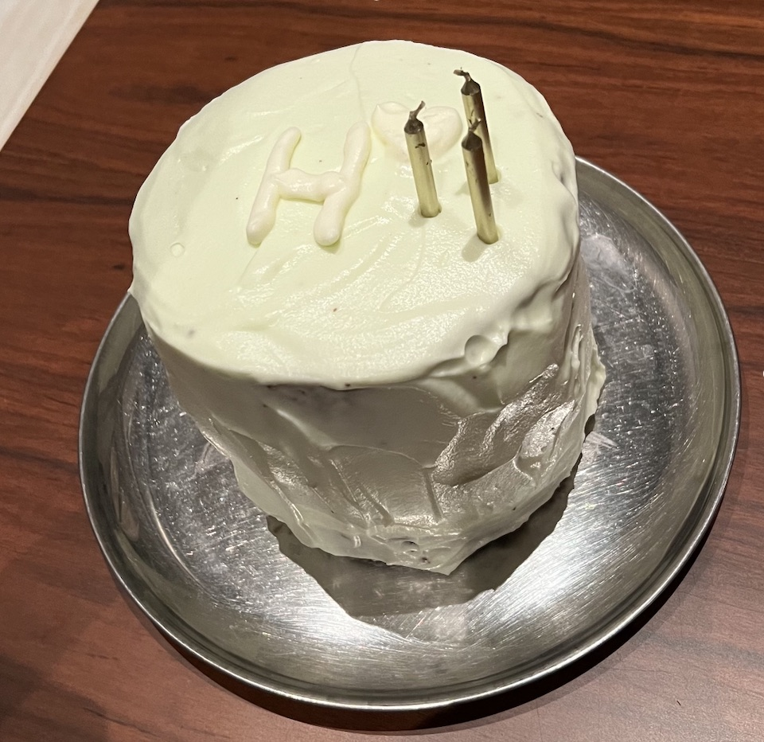
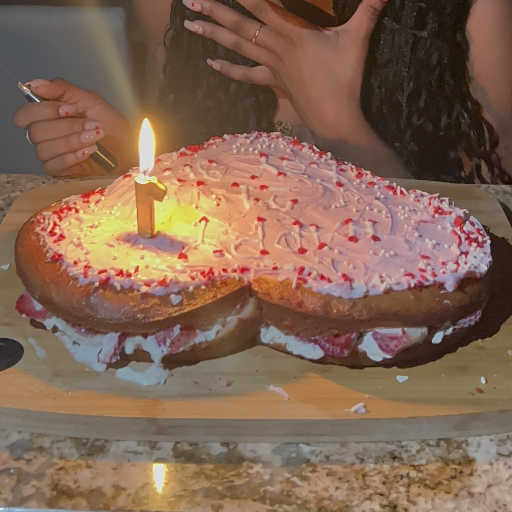

Bio
Hi! I am a Computer Science Master's student at USC with a Bachelor's in Computer Science and Business Management. My research focuses on machine learning for social good, with interests in Natural Language Processing (LLMs), Computer Vision, and Healthcare AI. My research experience lies in unlearning in LLMs, digital pathology cancer detection, deep learning, computer vision, and adversarial ML.
Research
-
Digital Pathology (AIMed Lab): Prostate cancer detection via tissue compartment segmentation (UNet, nnUNet, UNI). Achieved ~0.845 Dice score.
-
Unlearning in LLMs (ARKAI Lab): Studying targeted unlearning in LLMs using Harry Potter–unlearned models, applying ACT theory from psychology.
-
Healthcare AI: Diabetic Retinopathy detection with preprocessing (CLAHE, Gaussian Blur, MGA-CSG) to improve retinal fundus image quality.
-
Conversational Hinglish Chatbot: Built with multilingual and synthetic datasets, fine-tuned LLMs for open-domain dialogue.
-
Honors Thesis: Compared human vs. LLM sentiment analysis on nonprofit interview data in nuanced contexts.
-
NSF Internship: Investigated adversarial robustness in ML for autonomous driving.
Technical Projects
-
voteSmarter: Civic engagement mobile app for voter education and candidate matching.
-
ASLearning: Accessibility app using object detection to assist communication for the hearing-impaired.
-
AI Sentiment Analysis: Comparative analysis of human-coded vs. LLM sentiment output.
CV & Contact
Interests & Hobbies
Beyond research, I enjoy community outreach, rowing, baking, knitting, crocheting, sewing, film photography, and growing my vinyl collection. Below are some pics of my favorites:
Baking


Film Photography
- I love traveling and capturing nature, cityscapes, and animals with my 35mm point-and-shoot cameras (Olympus MJU and Canon Sure Shot Telemax).